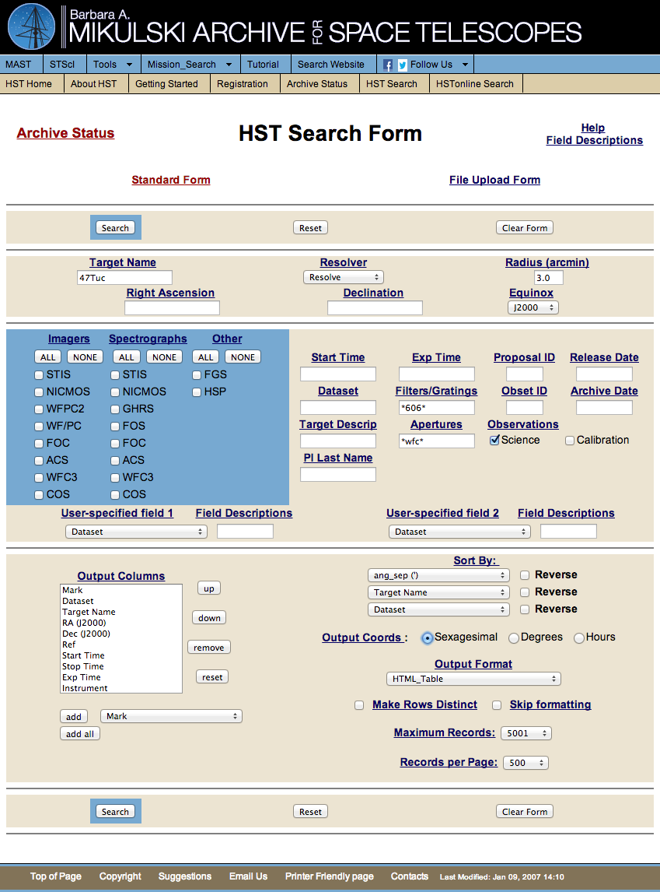
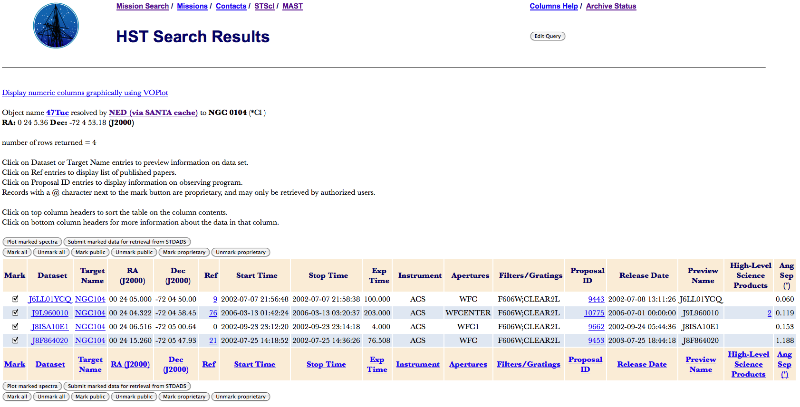
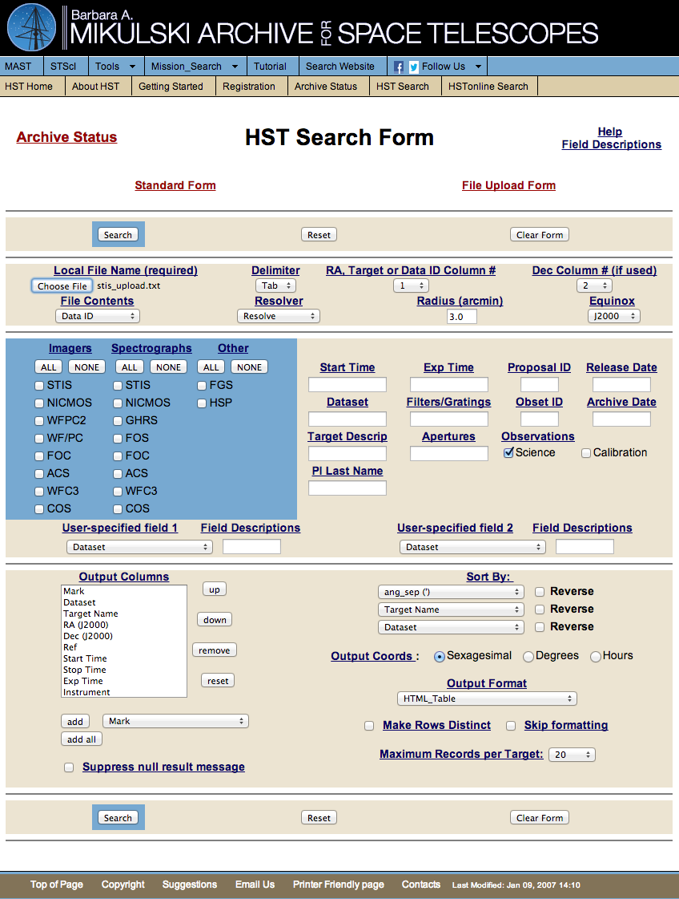

Using MAST (a.k.a. the Archive)¶
The goal of this training exercise is to familiarize you with:
Acquiring and Retrieving Data
- Searching for and Retrieving Data by Accessing the HST Archive through MAST
- HLA and Starview
Using PyRAF
- Understanding Image Headers for Calibrating Data
- Calibrating Data
- Retrieving Kepler Data and Editing Kepler Header Keyword Values (Optional)
- Some Additional Information
Resources:
PART I: Searching the Archive¶
In your work here at the Space Telescope Science Institute (STScI), you will likely use archival data often. So it is important to be able to navigate the various archives that can be found in MAST (the Mikulski Archive for Space Telescopes), which covers a plethora of space telescope missions. We will be using MAST, Hubble Legacy Archive (HLA), and Starview to retrieve data from the Hubble Space Telescope (HST). So let’s begin! Along the way, I will ask you to answer some questions and perform some exercises. Please keep a record of your answers to show when completed.
The MAST/HST archive can be searched from the following interface found at http://archive.stsci.edu/hst/search.php.
Search for ACS data (using the “Standard Form”)¶
Type 47Tuc in the Target box, with Resolver set to Resolve. In the Filters/Gratings box, enter
*606*. The asterisk (*) works as a wild card and can be used when you don’t know the exact syntax of the field. To specify the detector, enter*wfc*in the Aperture field. Note that you can also click each entry title for more information on the proper syntax. Save a list of these datasets in an HTML_Table (which is the default setting for the Output Format).Figure 1 portrays what the MAST search form should look like:
Figure 1: This is a facsimile of what the “Standard Form” MAST search request should look like.
Click on the Search button and you should get a new page with HST Search Results at the top with the datasets that match your search criterion. You will notice in the search results that this target is also called NGC104. Figure 2 shows the search results for this query.
Figure 2: This figure shows the results from the NGC104 ACS search.
Your search should have returned a list containing these Datasets:
J6LL01YCQ J8ISA10E1 J9L960010 J8F864020
Using the same search criteria, change the Target Name field to ngc104 with Resolver set to Don’t Resolve and Records per Page set to 500. Please pay attention to the “number of rows returned” at the top of the search results page.
Question 1
How many datasets were retrieved from the query in part b?
Now do the same search, but include wildcards in the target name ngc*104*. Notice how many rows were returned and think about why the number may be different. Sort the columns by Target Name by clicking on the column header. Note that the last dataset (J96G03010) is actually a different target that was found because of the wildcard search! So be careful!
Question 2
How many datasets were retrieved for the query in part c?
Modify your search again to include only the observations that executed after the ACS repair in 2009 (Start Time = >01-01-2009) that have exposure times between 30 and 100 seconds (Exp Time = 30 .. 100).
Question 3
How many datasets were retrieved for the query in part d?
Using the Output Columns selector box, try adjusting the search results page columns. Remove output columns so that only the Dataset, Target Name, and Start Time will be returned. Additionally sort the search results by Start Time, Target Name, and Dataset using the Sort By section on the search page. Save this search in an output file by using the File: tab-separated values under Output Format. Please save the resulting file as <your_name>_hst_search.txt, to be turned in to your instructor.
Note that the Datasets returned on the HST Search Results page are clickable. The link will open a new page containing a preview image and exposure information, which can be quite useful!
Search for STIS data (using the “File Upload Form”)¶
Create a text file that contains the following Datasets (one per line) to be used as your input list:
O8J502280 O8J502290 O8J5022A0 O8J5022B0 O8J5022C0 O8J5022D0 O8J5022E0
On the HST Search Form, click on the File Upload Form. This will bring up the search form as shown in Figure 3.
Pay attention to the following: Local File Name (this will point to the text file containing the Datasets), the button File Contents, which allows for mining MAST using Coordinates, Target Names, and Data ID, and the button RA, Target or Data ID Column, which defines what kind of data is in the first column or another column (you select on 1 of 10 columns in the upload text file). Figure 3 shows the parameter settings needed for the MAST search that is required for retrieval of the STIS data in your text file.
Figure 3: This is a facsimile of what the “File Upload Form” MAST search request should look like.
PART II: Retrieving Data¶
Once you are satisfied with your search parameters as shown in Figure 3, then click on the Search button. This will result in a new screen with HST Search Results at the top of the web page. Figure 4 show the results for this STIS query.
Figure 4: This figure shows the results from the STIS search.
Note that in Figure 4 all of the datasets are marked for retrieval, which is done by clicking on the Mark All button. If you are satisfied with the datasets that are marked for retrieval, then click on the Submit marked data for retrieval from STDADS button. The resulting webpage is shown in Figure 5.
Figure 5: This is what the “Retrieval Options” web page looks like.
There are several options for the type of delivery, the type of data
requested, and an option for overriding default parameters. For this
training exercise we want to retrieve the calibrated data and the
uncalibrated data, which includes the raw and wav extensions (needed
to reduce STIS data with calstis later in the training). You request the
data by ticking the “Calibrated” and “Uncalibrated” boxes
under “Science Files Requested” or by entering the specific extensions
you want in the “or enter a specific extension” box.
We will review two delivery options, STAGE and SFTP. The first delivery option is to stage the data. For this option, the data will be written to the Archive staging disk. You will be able to pull from the staging disk using FTP and logging in with your archive username and password. The other delivery option is to SFTP the data directly to a destination you provide.
STAGE option: To get data via the stage option, enter your Archive username and password, make your desired science file selections and click the “Send retrieval request to ST-DADS” to submit your request. After your request is processed by MAST, you should get two emails: the first will tell you that your data is being retrieved and the second will tell you that your data is staged (once the retrieval is complete). The second email will give you instructions on how and where to get your data. Because of the options that we chose for retrieval, we will have to use ftp to get the data from the MAST servers.
The following commands show how to do this. Assuming that you are in your working directory:
> ftp stdatu.stsci.edu
Name (Enter archive username)
Password: (Enter archive password)
ftp> binary
(n.b. if binary is not set, the retrieved data will be corrupted)
ftp> prompt
ftp> cd /stage/<username>/<data location>
ftp> mget *.fits
Entering these commands should download all of the raw and wav files from the ftp server to your current working directory. To exit the ftp connection, simply type, “exit”.
SFTP option: Enter your Archive username and password and make your
science file selections as before. Now select “sftp (OpenSSH v2)”.
In the “Destination” column, enter your IP address (or, if you know it, yourcomputername.stsci.edu)
next to “Hostname”, the directory you want the data placed, and the
username and password for the machine where the directory is located.
Click the “Send retrieval request to ST-DADS” to submit your
request. A test file will show up in the destination you specified
(deleted automatically). An email will be sent letting you know your
request was received and another email is sent when the data has been
delivered.
The selections needed to retrieve data over SFTP.
Additional, Useful SFTP Option
SFTP to a personal computer is not recommended any more, but in any case it’s faster to deliver to a server. For example, if you enter plhstins1.stsci.edu as a hostname and /user/myusername as the directory, it’ll deliver to Central Store and be available from your laptop/desktop for copying to local storage with the usual file management tools.
It’s faster to go from Archive to compute server than from Archive to personal machine because the archive and compute servers are connected by speedy ethernet.
You should now be familiar with searching for, and retrieving HST data through MAST. Good job! Next, we will explore a few additional ways to search for and retrieve HST data.
PART III: Alternative Archive Interfaces¶
Hubble Legacy Archive¶
The HLA can be found at http://hla.stsci.edu/. This archive contains all of the same data you can retrieve through MAST, but the data has been fully calibrated, aligned and drizzled within the same visit, and mosaics have been produced from multiple visits. Preliminary photometry and astrometry has also been performed on detections within the field of view using DAOphot and SExtractor. There are essentially 6 product “levels” found within the HLA and they are:
- Level 1 - data are the individual exposures, projected (“drizzled”) onto a common frame for each visit.
- Level 2 - data are the combined images (exposures with the same filter, same camera, and within the same visit).
- Level 3 - images are deep combined images or mosaics creating by combining data taken in different visits to the target.
- Level 4 - data are false color images (a combination of two or three colors, depending on what is available). They are included with other selections to help users assess data quality.
- Level 5 - data are the community-contributed high-level science products (HLSP).
- Level 0 - (calibrated, unprocessed) are not available for direct searches but may often by found using the More… link.
A “Frequently Asked Questions” section and instructions on how to search the archive can be found at http://hla.stsci.edu/hla_helpcenter.html.
What we are going to do now is retrieve source lists from the HLA. These source lists contain astrometric and photometric data that has been generated using DAOphot and SExtractor. We are going to be searching the HLA by using proposal ID numbers (note that there are many ways to search the HLA and what we will do is just one of them). These proposal IDs are: 9443, 10775, 9662, and 9453.
Source lists can ultimately be used to make color-magnitude diagrams (CMDs). If we were to make CMDs using the source lists, we would need data with two different filters within the same visit. Let us retrieve such data. The first step is to go to the web page at http://hla.stsci.edu/hlaview.html and click on the “advanced search” button. Enter the proposal ID number “10775” next to “Proposal ID”. The web page should look like Figure 6. If you are happy with your search parameters, then click on the Search button. Note that despite the fact that we have requested a search on all the HST instruments, we will only get results that pertain to the proposal ID that we have entered and any instrument used within a particular proposal.
Figure 6: This is what the search form should look like before you click on the “Search” button.
After you click on the Search button, you will get a web page that has the same set-up as Figure 6 but with the search results below it. Figure 7 shows a subset of the search results.
Figure 7: This is what the search form should look like after you click on the “Search” button. Note that this is only a lower portion of the actual web page.
Since we want two filters from the same visit and within a particular proposal, all the columns in Figure 7 (RA, Dec, Level, etc.) must have the same values except for Spectral_Elt, Dataset, and StartTime. Although it is preferable to have NExposures and ExpTime to be the same in making a CMD, this does not have to be the case for our purposes.
Use the search forms under the column names to located data for Target ‘NGC6809’ and Spectral_Elt ‘F606W’ and ‘F814W’. For this demonstration, look for four WFPC2 data sets: two F606W and two F814W. When you have found all four appropriate datasets, you can retrieve them by clicking on either the DAOphot or SExtractor links and these will be put into a shopping cart. Figure 8 shows where the shopping cart is located (middle of web page). Your cart should match Figure 9.
Note
You will need one F606W and one F814W dataset for the photometry section
Figure 8: This figure shows the shopping cart in yellow. This can be found in roughly the middle of the web page. Note that this is only a portion of the actual web page.
Click on the shopping cart to get Figure 9.
Figure 9: This figure shows what is in the shopping cart. This can be found in roughly the middle of the web page. Note that this is only a portion of the actual web page.
Make sure that you have the data that you want and click on Fetch HLA
Data. This will be downloaded as a zip. The file should look something
like this: HLADATA-<numbers>.zip. Unzip the data and view the contents.
You should see some text files (.cat for example) in there that contain the source lists. For a quick look, open them in an editor of your preference in Terminal.
After completing this training, please give one of the source lists that you retrieved to your instructor.
Starview¶
Starview is an excellent query tool to search for HST data. This query tool allows a user to search on numerous parameters that are not available through the HST MAST search form. The basic web page can be found in Figure 10, which shows a STIS Instrument search form. The web address is: http://starview.stsci.edu/web/.
Figure 10: This is the default configuration for Starview with a STIS Instrument search form.
Under the STIS folder on the left side of the window, select the STIS Instrument search form and make a copy of it by clicking on the button Copy button positioned at the top and in the middle of the webpage, under Screen Toolbar. This should create a new STIS Instrument (Copy) search form. Figure 11 portrays what you will see. Note that the copy that we just made is highlighted in blue in the top diagram of Figure 11 and this copy is what is shown in the bottom diagram of Figure 11. Working from the copy search form, we can edit this form to search on only certain parameters. We click on the Edit button and get what is found in Figure 12.
You will notice two immediate differences between Figures 11 and 12. The first difference can be found in the top diagrams of both figures. There are two tabs (Screens and Fields) that can be selected. In Figure 11, the Screens tab is chosen, while in Figure 12 the Fields tab is chosen. This is because we can add fields to the search form if they are not in the default settings. The second difference can be found in the two bottom diagrams in Figures 11 and 12. This second difference is seen in the red “X”s that are found in Figure 12’s bottom diagram but not in the bottom diagram of Figure 11. These red “X”s allow us to delete parameters that we do not want to use in our search form.
What we will do now is to remove any parameters that we do not need (note that we do not have to delete parameters that we do not want, this example is for illustrative purposes only). We will be searching on proposal ID, amplifier, dataset name, and exposure time. However, notice that when we have deleted all of the parameters except for these four, we find that there is no parameter entry for the amplifier.
This is where the Fields tab becomes useful. Under the Fields tab, we find three directories: catalog, cdbs, and proposaldb. Click on the sideways triangle to the left of catalog and you will get a list of numerous directories. The directory that we want is stis_ref_data and look for CCD Amp Readout under the label column and CCDAMP under the keyword column, which will be in the same row. Now click on the row with the correct label or keyword that you are looking for and then drag to the search form at the right. You should get what is found in Figure 13.
Figure 11: The left pane contains the list of available query “Screens”. The right pane shows the “STIS Instrument (copy)” form we made.
Figure 12: The left pane now shows “Fields” you can add to your query form. The right pane has been put in “Edit” mode from the Screen Toolbar, adding red delete buttons for each field.
Figure 13: This is what the edited search form should look like.
Now what we will do is use this abbreviated search form to search HST archives for the data that we want. The parameter values that we will use are: proposal ID 12769, amplifiers A and C, and exposure times, 0.0, 0.3, 0.6, 0.9, 2.3, 5.0, 60, and 1100 seconds. Note that we have not entered a dataset name in Dataset Name. We need the Dataset Name entry so that when the search is done, dataset names are returned. We will need the dataset names in order to retrieve the data from the HST archive.
As an example, use amp A and exposure time 0.3. Click on Search and subsequently get a web page that looks like what is found in Figure 14. We need to be careful here so that we get all of the data that we requested. The way to do this is to look in the lower right hand portion of the web page (see Figure 14 as well) and click on View All button. This will display all of the datasets on one page. Now we will select all of the datasets for retrieval by clicking on the first row with datasets and then hold the shift key down on the keyboard and select the last dataset entry. This will select all of the datasets and the rows will have a blue background.
Figure 14: This figure shows what datasets are available for download.
After the desired datasets have been selected (all of them in this case) click on the Download Cart button in the upper right of the web page and you will get a drop down menu with various selections. Choose Add To Cart. Once you have done this, the menu will disappear and you will have to click on Download Cart again. Select View Cart… and then you will get a GUI in the top center of the web page. Select Proceed to Checkout….
From here you can download the data like you normally would from MAST. (Note: This was just an exercise showing how Starview works. You do not need to actually download the data.)
MAST Data Discovery Portal¶
The MAST Data Discovery Portal (http://mast.stsci.edu/) is a newer, slicker interface to the Archive optimized for exploring existing archival data. If you’re interested in a part of the sky, and are curious whether any MAST-affiliated missions observed it, this tool will show you.
Here’s an example query showing the galaxy M83 with matching HST data sets selected.
There are sophisticated features for faceting (“narrowing-down”) and visualizing (FOV overlays on sky survey imagery, dataset thumbnails) HST, GALEX, SWIFT, and other missions’ archives.
If that sounds like it might be useful to your work, have a look at their user guide: http://mast.stsci.edu/portal/Mashup/Clients/Mast/data/html/MastHelp.html. (There are also video tutorials for common tasks at the bottom of that page.)
Conclusion¶
Thank you for completing the Archives Training! Please send your trainer the various materials that were asked of you to provide (i.e. answers to questions, the tab-separated query results file, and the source list), preferably in an email.